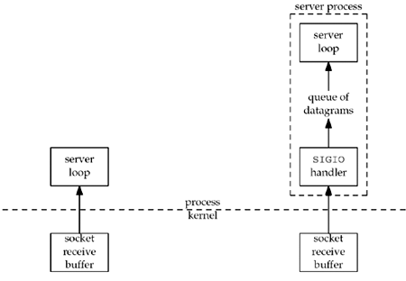

| [ Team LiB ] |
|
25.2 Signal-Driven I/O for SocketsTo use signal-driven I/O with a socket (SIGIO) requires the process to perform the following three steps:
Although setting a socket for signal-driven I/O is easy, the hard part is determining what conditions cause SIGIO to be generated for the socket owner. This depends on the underlying protocol. SIGIO with UDP SocketsUsing signal-driven I/O with UDP is simple. The signal is generated whenever
Hence, when we catch SIGIO for a UDP socket, we call recvfrom to either read the datagram that arrived or to obtain the asynchronous error. We talked about asynchronous errors with regard to UDP sockets in Section 8.9. Recall that these are generated only if the UDP socket is connected.
SIGIO with TCP SocketsUnfortunately, signal-driven I/O is next to useless with a TCP socket. The problem is that the signal is generated too often, and the occurrence of the signal does not tell us what happened. As noted on p. 439 of TCPv2, the following conditions all cause SIGIO to be generated for a TCP socket (assuming signal-driven I/O is enabled):
For example, if one is both reading from and writing to a TCP socket, SIGIO is generated when new data arrives and when data previously written is acknowledged, and there is no way to distinguish between the two in the signal handler. If SIGIO is used in this scenario, the TCP socket should be set to nonblocking to prevent a read or write from blocking. We should consider using SIGIO only with a listening TCP socket, because the only condition that generates SIGIO for a listening socket is the completion of a new connection. The only real-world use of signal-driven I/O with sockets that the authors were able to find is the NTP server, which uses UDP. The main loop of the server receives a datagram from a client and sends a response. But, there is a non-negligible amount of processing to do for each client's request (more than our trivial echo server). It is important for the server to record accurate timestamps for each received datagram, since that value is returned to the client and then used by the client to calculate the RTT to the server. Figure 25.1 shows two ways to build such a UDP server. Figure 25.1. Two different ways to build a UDP server. Most UDP servers (including our echo server from Chapter 8) are designed as shown at the left of this figure. But the NTP server uses the technique shown on the right side: When a new datagram arrives, it is read by the SIGIO handler, which also records the time at which the datagram arrived. The datagram is then placed on another queue within the process from which it will be removed by and processed by the main server loop. Although this complicates the server code, it provides accurate timestamps of arriving datagrams.
|
| [ Team LiB ] |
|